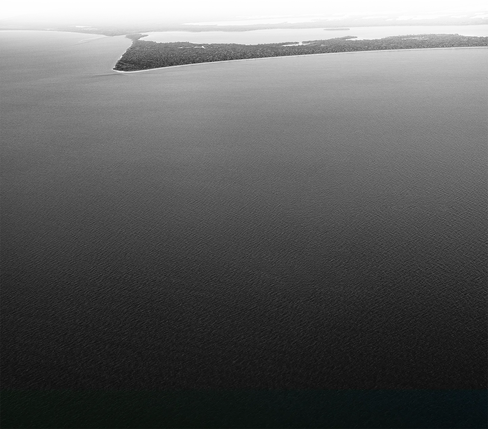
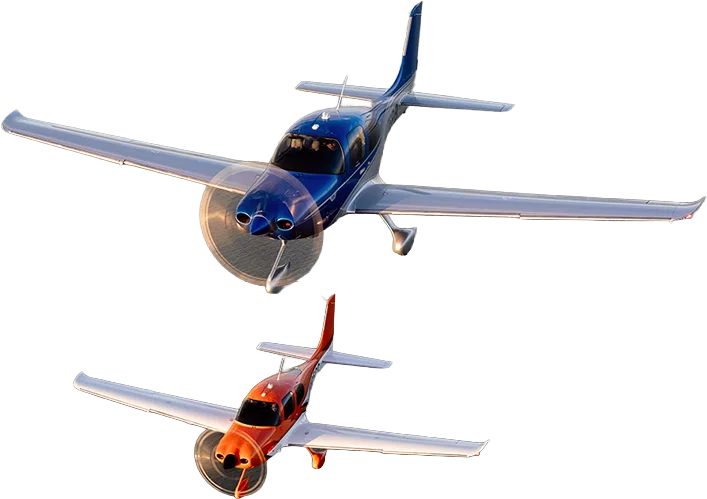

Charlie 0 Gestão
Gestão profissional para quem voa Cirrus. Duas frentes distintas — cotas de aeronaves compartilhadas e horas de voo otimizadas — para reduzir custos e maximizar disponibilidade, com a conformidade técnica da Charlie Zero.
Cotas de Aeronaves Compartilhadas
Acesso à aviação executiva sem o custo total de uma aeronave própria. Adquira uma cota de uma Cirrus compartilhada e tenha disponibilidade garantida, manutenção incluída e a operação gerenciada pela Charlie Zero.
- Disponibilidade programada por cota
- Manutenção e seguros inclusos
- Operação e logística gerenciadas
- Acesso à frota Cirrus homologada
Horas de Voo Otimizadas
Para quem já tem aeronave ou cota. Planejamos e otimizamos suas horas de voo para maximizar a disponibilidade, reduzir custos operacionais e garantir conformidade técnica em cada decolagem.
- Planejamento de horas por demanda
- Redução de custo operacional
- Conformidade técnica garantida
- Acompanhamento contínuo


jornada
aeronáutica
A paixão por voar naturalmente desperta o desejo de ter o seu próprio avião. Para que a compra de uma aeronave ou cota seja tão precisa e confiável quanto a sua formação, indicamos parceiros estratégicos de nossa total confiança. Um acompanhamento especialista e transparente para ajudá-lo a fazer a escolha ideal para o seu perfil de voo.
SAIBA MAIS